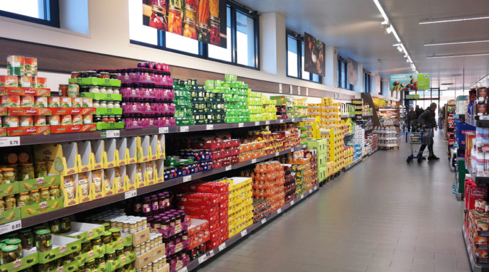

Di seguito sono riportati alcuni consigli igenici che è consigliabile rispettare quando si è fuori casa.
News - Le ultime notizie su COVID-19

Coronavirus, ricostruita la "rotta" della pandemia attraverso le mutazioni del genoma
Molti ricercatori hanno sequenziato il genoma del coronavirus; ma anche il Sars-CoV-2 è soggetto a mutazioni, come ogni organismo vivente; e quindi spesso ci si ritrova con minime differenze, che sono spesso utili per risalire all’origine del contagio. Secondo uno studio dell’Università di Cambridge, che ha esaminato 160 genomi provenienti da pazienti di tutto il mondo, i ceppi principali sono tre: la variante A, quella primordiale nata in Cina e diffusa in America e Australia; la variante B, sviluppatasi grazie a due mutazioni chiave e diffusa nell'Asia orientale; infine la variante C, frutto di una mutazione della B che ha conquistato Europa, Singapore, Hong Kong e Corea del Sud. Continua a leggere...
Per convivere con il virus
Servizi
In questa sezione è possibile accedere a una serie di servizi per gestire l'emergenza sanitaria attuale:
Autocertificazione
Qui è possibile ricevere la propria autocertificazione già compilata. E' necessario munirsi solamente del proprio codice fiscale e nulla più. Prova adesso!

Richiedi la tua spesa
Vuoi la tua spesa? Qui potrai usufruire del servizio offerto dalla Protezione Civile selezionando il supermercato nelle tue vicinanze.

Dona
Dai il tuo contributo alle strutture che si trovano a fronteggiare l'emergenza sanitaria del COVID-19.
Situazione COVID-19 in Italia
In questa sezione è possibile visualizzare gli aggiornamenti degli ultimi dati forniti dal Ministero della Salute sulla situazione COVID-19 in Italia.